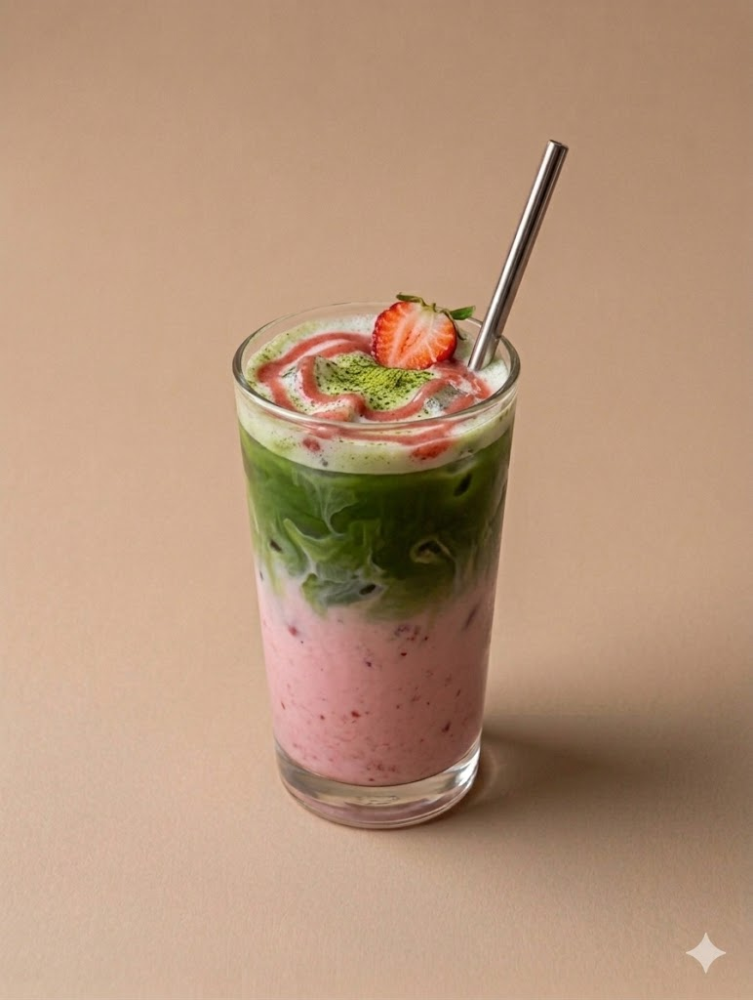
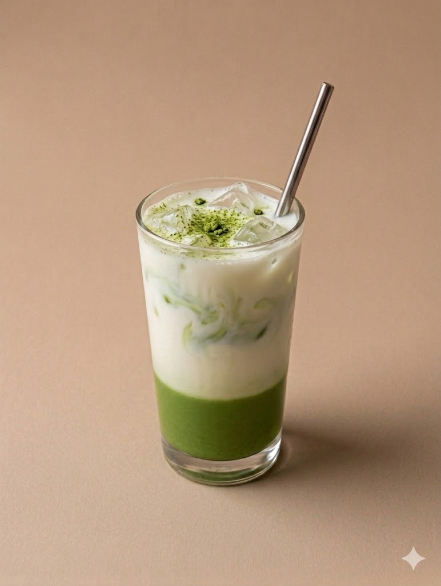
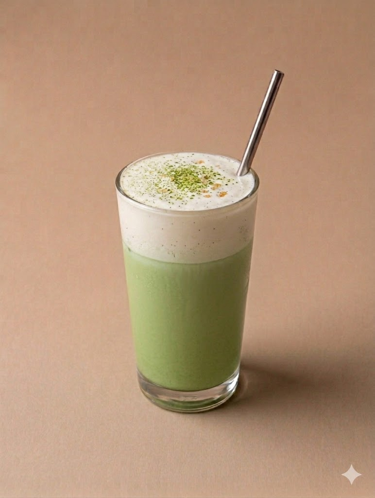
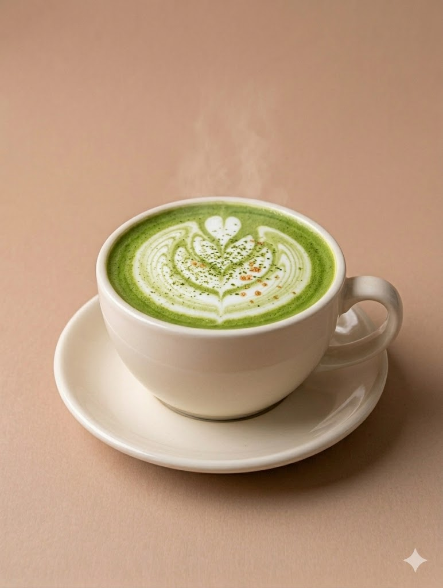

MATCHA RECIPES
Matcha can be enjoyed in different ways depending on preparation, and traditional methods such as whisking with hot water help bring out its smooth flavor and vibrant color, as explained in this guide on enjoying matcha. High quality ceremonial grade matcha can be found from brands like Matcha.com. To learn more about the health benefits of matcha, The National Library of Medicine explains it well.

Strawberry Matcha Latte
Ingredients
- 1 teaspoon matcha powder
- Warm water
- Strawberry milk
- Ice cubes
Directions
Add matcha powder into a small bowl and whisk it with warm water until smooth. Fill a cup with ice and strawberry milk. Slowly pour the matcha over the strawberry milk to create layers, then stir before drinking.

Classic Matcha Latte
Ingredients
- 1 teaspoon matcha powder
- 1 cup milk
- Warm water
- Ice cubes
Directions
Add the matcha powder into a small bowl or cup and pour in a little warm water. Whisk until the matcha is smooth with no clumps left. Fill a cup with ice and pour in your milk of choice, then sugar or honey if desired. Slowly pour the matcha mixture over the milk and stir before drinking.

Vanilla Matcha Latte
Ingredients
- 1 teaspoon matcha powder
- Warm water
- Ice cubes
- 1 cup milk
- 2 tablespoon vanilla
- 1/4 cup heavy cream
Directions
Whisk the matcha powder with warm water until smooth. Add vanilla syrup into a mug or cup and pour in your milk of choice. Slowly pour the matcha over the milk and stir gently. In a seperate cup whisk vanilla syrup and the heavy to a liquid creamy foam. Add suagr based on your desired sweetness. Pour the cold foam at the top of your matcha.

Hot Matcha Latte
Ingredients
- 1 teaspoon matcha powder
- 1 cup warm milk
- Warm water
Directions
Add matcha powder into a mug and whisk it with warm water until smooth. Pour warm milk into the mug and add honey or sugar if desired. Stir everything together and serve warm.